“95% 以上的崩溃都能解决或者规避，大部分的系统崩溃也是如此”，这是我在专栏“崩溃优化”中曾经夸下的海口。
虽然收集了尽可能丰富的崩溃现场，但总会有一些情况是事先没有预料到的，我们无法直接从崩溃日志里找到原因。事实上我们面临的难题远远不止崩溃，比如说用户投诉文件下载到 99% 之后无法继续，那如何确定是用户手机网络不好，是后台服务器出错，还是客户端代码的 Bug？
我们的业务逻辑越来越复杂，应用运行的环境也变得越来越复杂，因此在实际工作中总会遇到大大小小的线上疑难问题。对于这些问题，如何将它们“抽丝剥茧”，有哪些武器可以帮助我们更好地排查和跟踪呢？
用户日志
对于疑难问题，我们可以把它们分为崩溃和非崩溃两类。一般有哪些传统的排查手段呢？
-
本地尝试复现。无论是崩溃还是功能性的问题，只要有稳定的复现路径，我们都可以在本地采用各种各样的手段或工具进行反复分析。但是真正的疑难问题往往都很难复现，它们可能跟用户机型、本地存储数据等环境有关。
-
发临时包或者灰度包。如果发临时包给用户，整个过程用户配合繁琐，而且解决问题的时间也会很长。很多时候我们根本无法联系到用户，这个时候只能通过发线上灰度包的方式。但是为了一步步缩小问题的范围，我们可能又需要一次次地灰度。
我们多么希望能有一些“武器”，帮助工程师用非常低的成本，在非常短的时间内，尽可能地收集足够丰富的信息，更快速地排查和解决问题。
1. Xlog
在日常开发过程中，我们经常会使用 Logcat 日志来排查定位代码中的问题。
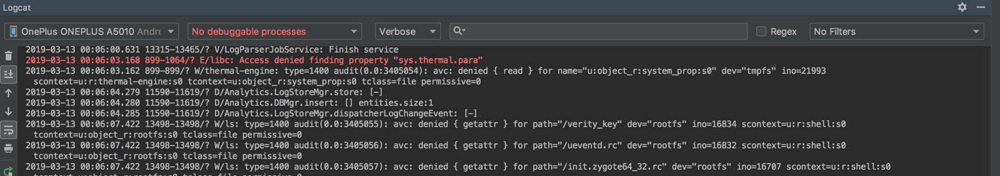
对于线上问题，我们也希望可以有用户的完整日志，这样即使问题不能复现，通过日志也可能定位到具体的原因。所谓“养兵千日，用兵一时”，客户端日志只有当出现问题且不容易复现时才会体现出它的重要作用。但是为了保证关键时刻有日志可用，就需要保证程序整个生命周期内都要打日志，所以日志方案的选择至关重要。
在过去因为性能和可靠性问题，通常我们只针对某少部分人动态打开日志开关。那如何实现一套高性能、日志不会丢失并且安全的日志方案呢？微信在 2014 年就实现了自己的高性能日志模块 Xlog，并且在 2016 年作为 Mars 的一部分开源到GitHub。关于 Xlog 的更多实现细节，你可以参考源码或者会议分享。
Xlog 方案的出现，可以让全量用户全天候打开日志，也不需要担心对应用性能造成太大的影响。但是 Xlog 只是一个高性能的日志工具，最终是否能解决我们的线上问题，还需要看我们如何去使用它。
所以微信制定了严格的日志规范，定期对拉取的日志作规则检查，一旦发现有违反规则的情况，会作出一定的处罚。下面是其中的一些日志规范，我选取一些分享给你。
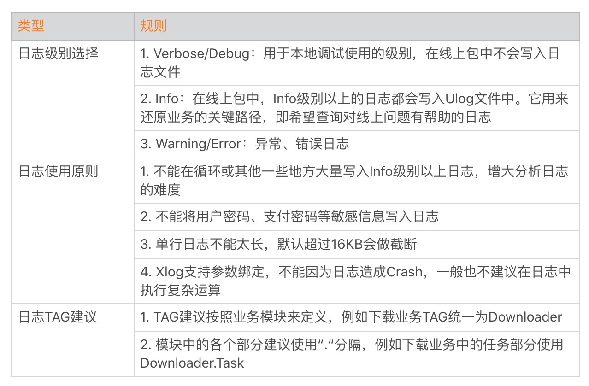
日志打点怕打太多也怕太少，担心出现问题没有足够丰富的信息去定位分析问题。应该打多少日志，如何去打日志并没有一个非常严格的准则，这需要整个团队在长期实践中慢慢去摸索。在最开始的时候，可能大家都不重视也不愿意去增加关键代码的日志，但是当我们通过日志平台解决了一些疑难问题以后，团队内部的成功案例越来越多的时候，这种习惯也就慢慢建立起来了。
2. Logan
对于移动应用来说，我们可能会有各种各样的日志类型，例如代码日志、崩溃日志、埋点日志、用户行为日志等。由于不同类型的日志都有自己的特点，这样会导致日志比较分散，比如我们要查一个问题，需要在各个不同的日志平台查不同的日志。美团为了解决这个问题，提出了统一日志平台的思路，也在Github 开源了自己的移动端基础日志库 Logan。
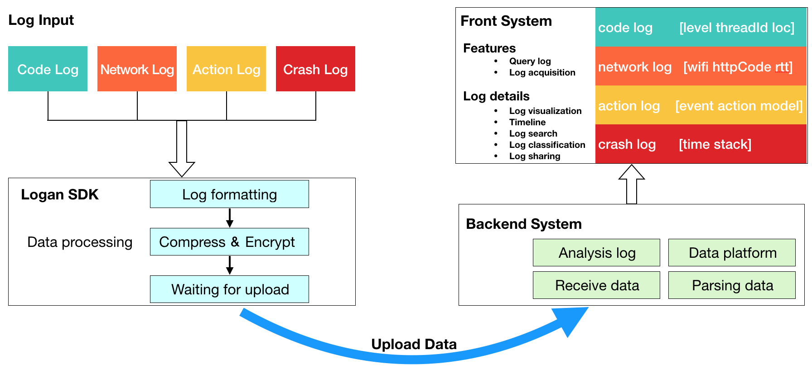
Logan 整合了各式各样的日志平台，打造成一个统一的日志平台，进一步提升了开发人员查找问题的效率。不过无论是 Logan 还是 Xlog，日志一般会通过下面两种方式上报。
- Push 拉取。通过推送命令，只拉取特定用户的日志。
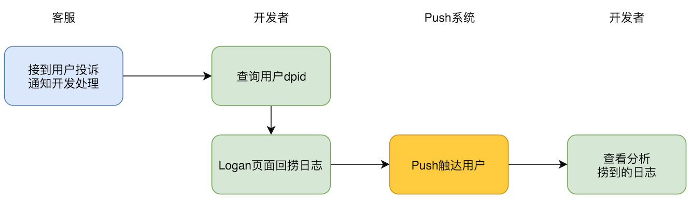
- 主动上报。在用户反馈问题、出现崩溃等一些预设场景，主动上报日志。
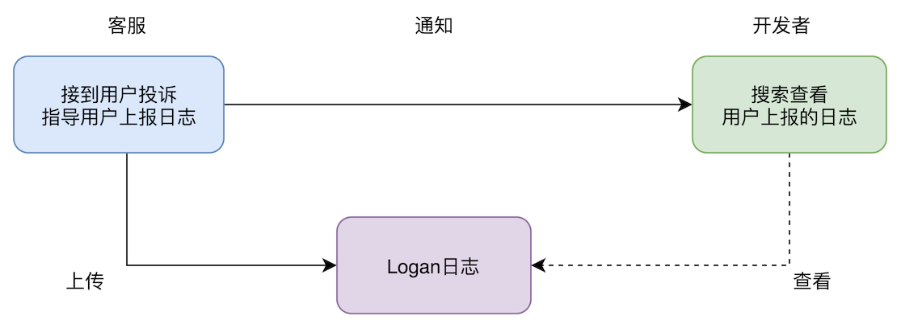
对于用户日志，我们是否已经做到尽善尽美了？手动埋点的覆盖范围有限，如果关键位置没有预先埋点，那可能就需要重新发包。所以美团在 Logan 基础上，还推出了Android 动态日志系统 Holmes。
Holmes 的实现跟美团的 Robust 热修复思路差不多，需要对每个方法进行了插桩来记录方法执行路径，也就是在方法的开头插入一段桩代码，当方法运行的时候就会记录方法签名、进程、线程、时间等形成一条完整的执行信息。但是这套方案性能的技术难点比较多，一般只会动态针对出现问题的用户开启。
虽然这个思路有一定的启发性，但我认为其实并不太实用。一来，对每个方法插桩，会对安装包体积和性能造成很大的影响，导致这套方案过于笨重；二来，很多疑难问题都具有偶发性，当用户出现问题后，再去打开用户日志，可能也不能保证用户的问题可以复现。
动态调试
“只要你能在本地复现，我就能解决”，这可能是开发对测试说过最多的话了。在本地，我们可以通过增加日志，或者使用 Debugger、GDB 等这样的调试工具反复进行验证。
针对远程用户，如果我们可以做到具备跟本地一样的动态调试能力，想想都觉得激动人心。那有没有方案能实现远程动态调试呢？
1. 远程调试
动态调试，又或者是动态跟踪，它们属于高级的调试技术。事实上，它并不是什么新鲜的话题，例如 Linux 中大名鼎鼎的 DTrace 和 SystemTap、Java 的 BTrace，都是非常成熟的方案。我推荐你仔细阅读《动态调试漫谈》和《Java 动态追踪技术探究》，特别是前者，让我有非常大的收获。
在 Android 端，我们能不能实现对用户做动态调试呢？在回答这个问题之前，请先来思考一下平时我们通过 Android Studio 进行调试的底层原理是什么。
其实我们的学习委员鹏飞之前已经讲过这块内容了，回到“Android JVM TI 机制详解”中说到的 Debugger Architecture。Java 的调试框架是通过 JPDA（Java Platform Debugger Architecture，Java 平台调试体系结构），它定义了一套独立且完整的调试体系，主要由以下三部分组成：
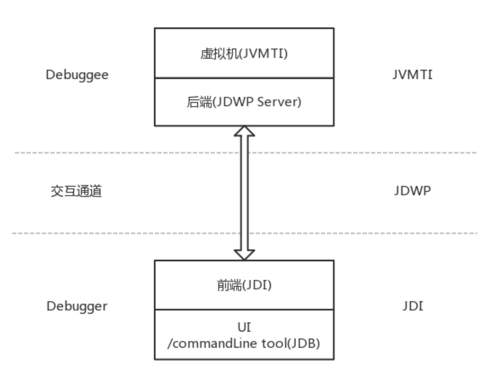
如果你想了解更多关于 Java 调试框架的信息，可以重新回顾一下“Android JVM TI 机制详解”里给出的参考链接。
对于 Android 来说，它的调试框架也是在 Java 调试框架基础上进行的扩展，主要包括 Android Studio（JDI）、ddmlib、adb server、adb daemon、Android 应用这五个组成部分。
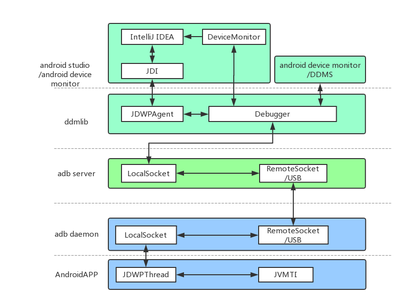
如果想要实现对用户的远程调试，我们需要修改其中的两个部分。
-
JDWP（传输通道）。我们不能使用系统 adb 的方式，而是希望将用户的调试信息经过网络通道发送给我们。
-
JDI（前端展示）。对于客户端调试数据的展示，我们不太容易直接复用 Android Studio，需要重新实现自己的数据展示页面。
关于具体实现的细节，你可以参考美团的文章《Android 远程调试的探索与实现》，最终整体的流程如下。
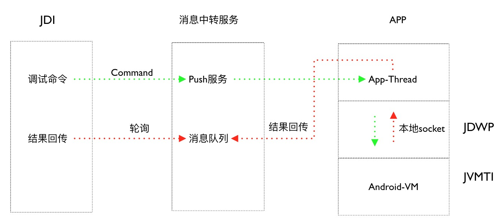
当然不同于本地 Debug 包的调试，对于用户调试我们还需要考虑如何突破 ProGuard 和 Debugable 的影响。总的来说，这套方案有非常大的技术价值，可以加深我们对 Java 调试框架的理解。但是它并不实用，因为大部分的场景，我们很难在用户不配合的前提下做好调试。而且调试过程也可能会出现各种各样的情况，并不容易控制。
不过退而求其次，通过这个思路，我们可以在本地实现“无线调试”（无需 adb），又或者是实现对混淆包的调试。
2. 动态部署
如果说远程调试并不很实用，那有没有其他方法让用户感知不到我们在进行调试呢？
用户无感知、代码更新，这不正是动态部署所具备的能力，而且动态部署天生就非常适合使用在疑难问题的排查上。
-
精细化。通过发布平台，我们可以只选择某些问题用户做动态更新。也可以圈定某一批用户，例如某个问题只在华为的某款机型出现，那我可以只针对华为的这款机型下发。
-
场景。对于疑难问题的排查，我们一般只会增加日志或者简单修改逻辑，动态部署在这个场景是完全可以满足的。
-
可重复、可回退。对于疑难问题，我们可能需要反复尝试不同的解决思路，动态部署完全可以解决这个需求。而且在问题解决后，我们可以及时将无用的 Patch 回退。
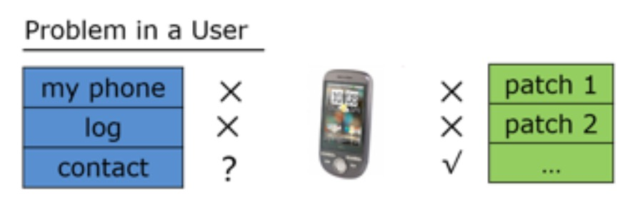
我还记得曾经为了解决 libhw.so 的崩溃问题，我们历经一个月，一共发布了 30 多个动态部署，反复地增加日志、增加 Hook 点，最终才得以解决。
3. 远程控制
动态部署存在生效时间比较慢（几分钟到十几分钟）、无法覆盖 100% 用户（修改 AndroidManifest 或者用户手机没有剩余空间）等问题。对于一些特定问题，我们可以通过下发预设规则的方式来处理。
网络远程诊断是一个非常经典的例子，假如有个用户反馈某个网页无法打开，我们可以通过本地或者远程下发指令方式，对用户的整个网络请求过程做完整的检测，看看是不是用户的网络问题，是不是 DNS 的问题，在请求的哪个阶段出错了，错误码是什么等。
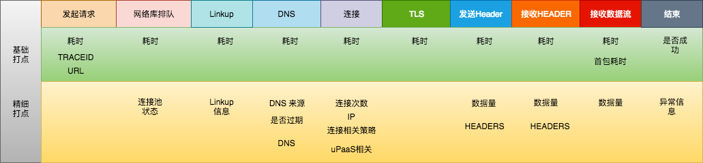
Mars 里面也有一个专门的 SDT 网络诊断模块，我们可以顺便回顾一下 Mars 整个知识结构图。
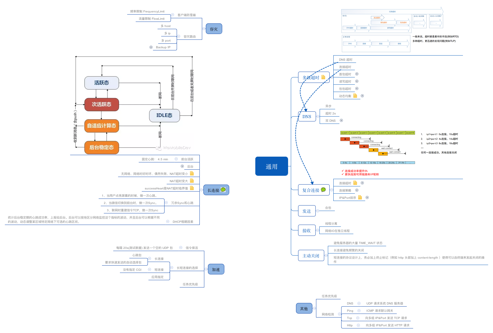
除了网络的远程诊断之外，网络疑难问题的排查和跟踪本身就是一个非常大的话题。它涉及业务请求从域名解析 / 流量调度到业务统一接入，再到业务调用的整个访问链路，属于大网络平台的一环。
我们可以通过客户端生成的 traceId，将统一收集和整合客户端日志、服务端调用日志、自建 CDN 等日志，建立以用户为维度的监控平台，提供问题定位功能 。例如 Google 的 Dapper、阿里的 EagleEye、微信的点击流平台、QQ 的全链路监控平台等，都是通过这个思路实现的。
类似网络远程诊断，又或者是删除某些文件、上报某些信息，这些预设规则是建立在我们已经踩过某个坑，或者更多情况是已经无数次踩到同一个坑，并且忍无可忍，才会搭建一套相应的诊断规则。那我们能不能不通过动态部署，也可以简单的调用某些 Java 代码呢？
这个时候就不得不提到非常强大的 Lua 脚本语言，iOS 之前大名鼎鼎的Wax 热修复、腾讯 Unity3D 的热更新方案，都是使用 Lua 来实现。Lua 的 VM 非常小，只有 200KB 不到，充分保证了时间和内存开销的可控。我们可以对目标用户下发指令，动态地执行一段代码并将结果上报，或者在方法运行的时候去获取某些对象、参数的快照信息。
下面是 Lua 和 Android 的调用事例。
// lua 脚本函数function setText(textView) tv:setText("set by Lua."..s); // 这里的 s 变量由 java 注入 tv:setTextSize(30);end // android 调用lua.pushString( "from java" ); // 压入欲注入变量的值lua.setGlobal( "s" ); // 压入变量名lua.getGlobal( "setText" ); // 获取 Lua 函数lua.pushJavaObject( textView ); // 压入参数lua.pcall( 1, 0, 0 ); // 执行函数对于 Lua 的使用，你可以参考官方文档。为了方便我们在 Android 更加容易的使用 Lua，也有不少开源库对 Lua 做了更好的封装，例如AndroLua，阿里也有一套基于 Lua 实现的动态化界面框架LuaViewSDK。
美团的 Holmes 也利用 Lua 增加了 DB 查询、上报普通文本、ShardPreferences 查询、获取 Context 对象、查询权限、追加埋点到本地、上传文件等综合能力。正因为 Lua 脚本如此强大，很多大厂 App 也都在 Android 中集成 Lua。
总结
对于美团、支付宝、淘宝这些超级应用来说，不同的平台、不同的业务可能有上千人同时在一个应用上面开发协作。业务量大、多地区协作开发、业务类型多，每当出现问题都会感到耗时耗力，心力交瘁。
正因为反复“痛过”，才会有了微信的用户日志和点击流平台，才会有美团的 Logan 和 Homles 统一日志系统。所谓团队的“提质增效”，就是寻找团队中这些痛点，思考如何去改进。无论是流程的自动化，还是开发新的工具、新的平台，都是朝着这个目标前进。
课后作业
在你的工作中，遇到或者解决过哪些经典的疑难问题？还有哪些强大的疑难问题的排查武器？欢迎留言分享给我和其他同学。
无论是推送拉取用户日志，还是远程调试命令的下发，我们都需要具备区分用户的能力。对于微信这样强登录的应用，我们可以使用微信号作为用户标识。但是用户登陆之前的日志该如何收集呢？
对于用户唯一标识，Google 有自己的最佳实践方案。对于大部分非强登录的应用，搭建自己的用户标识体系非常重要。用户唯一标识需要考虑漂移率、碰撞率以及是否跨应用等因素，业界常用的方案有阿里的 UTDID、腾讯 MTA ID。
今天的课后作业是，应用该如何实现自己的用户标识体系，请你在留言中写下自己的答案。
COMMUNITY NOTES
读者评论
请教下，系统日志是否有办法捞取
您好，看了一下Xlog和Logan，很不错的设计思想，只不过都没有开放对应的类似于bugly的平台，可以实时看到崩溃日志。而且日志也经过加密，那么我们移动端的小伙伴使用了这两个框架该如何查看日志呢？
很明显感觉到这篇文章涉及到的内容很多很深，要全部搞透不容易啊